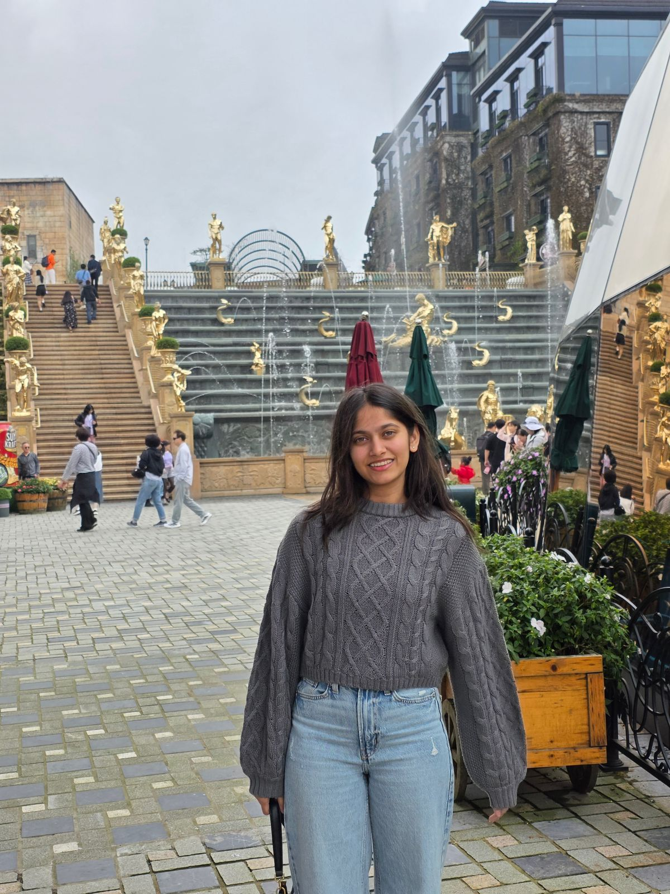
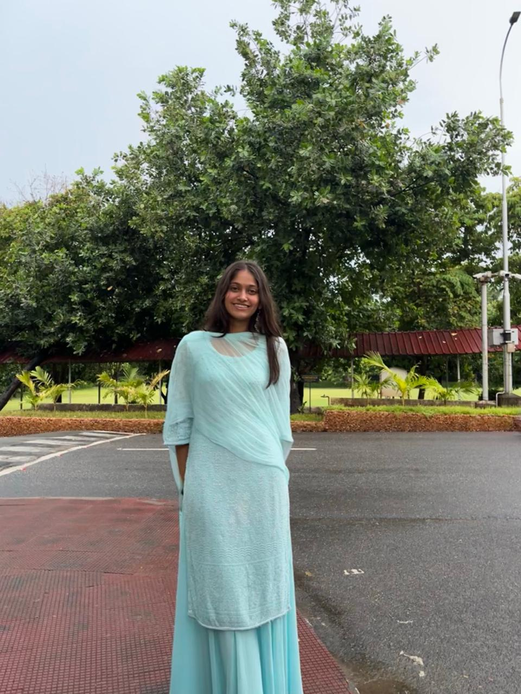

About Me
 Hi, I’m Jaanvi Doshi, a student from Indore with an interest in web development. I work with HTML and CSS and enjoy creating clean, well-structured web pages. I am hardworking, curious, empathetic, and open to learning new things, and I am currently working towards securing an internship to gain practical experience.. Being at VIT has given me a great platform to explore the intersection of design and technology.
My Hobbies


I enjoy playing sports like badminton and hockey, as well as painting in my free time. I also like binge-watching shows and exploring different kinds of food to relax. These hobbies help me stay balanced, creative, and refreshed, which positively influences my learning and work..